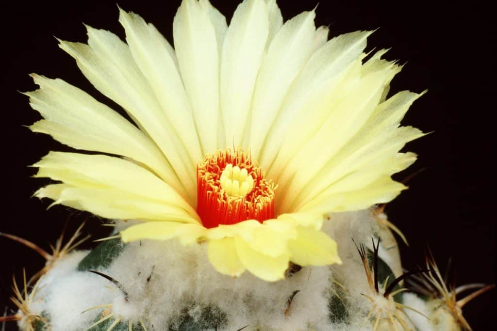
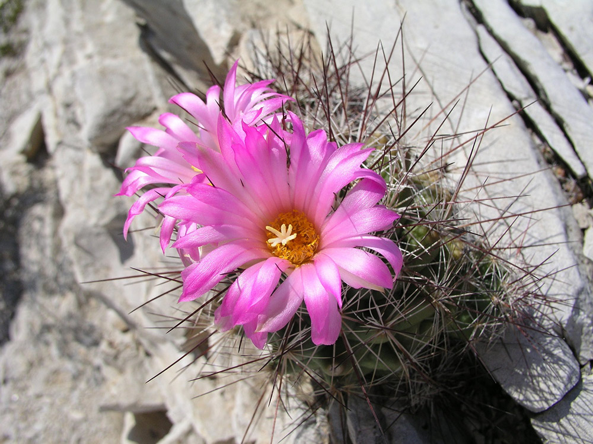
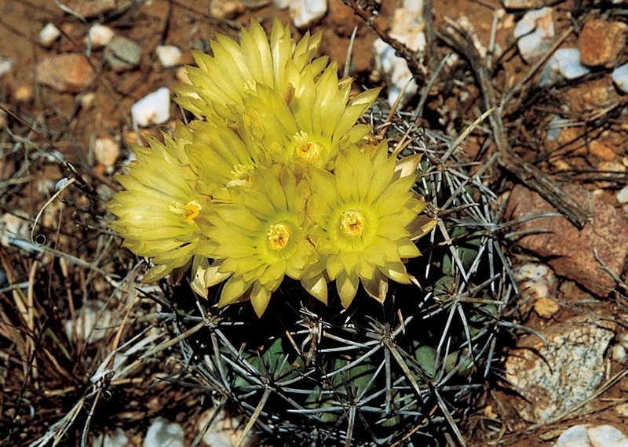

Coryphantha Cactus
An intricate work of nature flourishing in arid surroundings.
Introduction:
A changed genus of cacti called Coryphantha is widely known for its odd growth habits, attractive flowers, and capacity to survive in dry environments.
The Cactaceae family, that also includes a variety of cacti species, includes the genus Coryphantha. The word "Coryphantha" is both of the Greek words "koryphe," meaning summit or peak, and "anthos," and meaning flower, and it describes to the particular flower on these cacti.

Physical Characteristics
Native to North America, coryphantha cacti are most common in northern Mexico and the southwestern United States. They are found in plenty of arid and semiarid conditions, includes deserts, rocks, grasslands, and even mountains. The ability for adaptation is shown by the reality that they can survive in such a variety of conditions.
The colorful flowers of Coryphantha cacti are one of their unique features. These flowers grow wider and can have a diameter a few inches.
They come in an array of colors, from bright pinks and yellows to easier whites and reds, and bloom from the areoles on the stem. Many triggers, like temperature, humidity, and light stages, are often linked to flowering.
Growth forms and steams:
Coryphantha cacti pose a number of growth forms. The stems can be cylindrical or cylindrical, and they may expand alone or in pairs. On the stems of some species, there are known ribs or tubercles. They can vary extremely between species, giving to the genus' particular character.
Spine And Aeroles:
Areoles, which are specialized sets from which spines, flowers, and even new growth emerge, are decor on the stems of Coryphantha the cactus The real spines vary in size, shape, and color, offering the cactus a distinct appearance often. Spine arrangement can also vary, with some species having spines the closely space out and others having spines who are widely spaced.
Spine And Areoles:
The colorful flowers of Coryphantha cacti are one of their unique features. These flowers grow wider and can have a diameter a few inches.
They come in an array of colors, from bright pinks and yellows to easier whites and reds, and bloom from the areoles on the stem. Many triggers, like temperature, humidity, and light stages, are often linked to flowering.
Adaptations to Arid Environments:
In Order To Survive In Dry Environments, Coryphantha Cactus Have Developed A Number Of Adaptations. They Survive Long Floods Due To The Water Stores In Their Stems. Their Spines Hide The Stem's Surface Form Herbivores, Aid In Reducing Water Loss Through Transpiration, And Even Offer Some Shade.
Conservation and Cultivation:
Threats To Some Coryphantha Cacti Species Includes Loss Of Habitat, Climate Change, And Illegal Extraction. To Keep These Cacti And Keep Their Genetic Selection, Conservation Initiatives Are Important. A Variety Of Species Are Raised As Well By Enthusiasts, That Take Proper Care Of Them With Soil Which Drains Properly, Plenty Of Sunlight, Controlled Watering, And Attention To Surroundings.
Variability and Research:
Richness Of The Genus Coryphantha Is Well Recognized, And Continuous Research And Taxonomic Studies May Result In The Identification Of New Species Or A Deeper Comprehension Of Already Known Ones Botanists And Cactus Lovers Are Still Investigating The Traits, Habitats, And Connections Within The Genus

How to take care of Acanthocereus cactus:
Light:
Provide Coryphantha cacti with plenty of direct sunshine. They need full sun to flourish, so put them somewhere that gets it for a few hours each day. Choose a south or west-facing window if you're growing inside.
Temperature:
Warm temperatures are ideal for coryphantha cacti. Maintain temperatures in the growing season (spring and summer) between 70°F and 90°F (21°C and 32°C). They can endure temperatures below as 50°F (10°C) in the winter.
Soil:
Use a well-draining cactus or succulent mix. You can also create your own mix by combining regular potting soil with sand and perlite to enhance drainage
Potting:
To prevent water deposits, use a pot with drainage holes. Every few years, repot your Coryphantha cactus to reload the soil and provide its a larger area for growth.
Watering:
In between waterings, let the soil dry out. When the top inch of soil is dry throughout the growth season, water. When the cactus is dormant in the winter and requires less water, reduce irrigation. Cacti are prone to root rot, so avoid overwatering
Humidity:
Low humidity conditions resembling those in their natural habitat are ideal for Coryphantha cactus growth. Avoid situations with excessive humidity.
Fertilization:
During the spring and summer growing seasons, handle your cactus employing a diluted, balanced cactus fertilizer. Avoid overfertilizing and stick to directions on the fertilizer's item.
Fertilization:
During the spring and summer growing seasons, handle your cactus employing a diluted, balanced cactus fertilizer. Avoid overfertilizing and stick to directions on the fertilizer's item.

Propagation of the Acanthocereus Cactus
From seeds or offsets (pups), anyone may create Coryphantha cacti. Seeds can be sown in soil which drain well, and offsets can be carefully cut from the parent plant and potted up.
Observation And Adjusment:
Keep an eye on your cactus and rewrite your care as needed. As every cactus is unique, they could have various requests.
A changed genus of cacti called Coryphantha is widely known for its odd growth habits, attractive flowers, and capacity to survive in dry environments.
Coryphantha cacti pose a number of growth forms. The stems can be cylindrical or cylindrical, and they may expand alone or in pairs. On the stems of some species, there are known ribs or tubercles. They can vary extremely between species, giving to the genus' particular character.
Areoles, which are specialized sets from which spines, flowers, and even new growth emerge, are decor on the stems of Coryphantha the cactus The real spines vary in size, shape, and color, offering the cactus a distinct appearance often. Spine arrangement can also vary, with some species having spines the closely space out and others having spines who are widely spaced.
The colorful flowers of Coryphantha cacti are one of their unique features. These flowers grow wider and can have a diameter a few inches. They come in an array of colors, from bright pinks and yellows to easier whites and reds, and bloom from the areoles on the stem. Many triggers, like temperature, humidity, and light stages, are often linked to flowering.
In Order To Survive In Dry Environments, Coryphantha Cactus Have Developed A Number Of Adaptations. They Survive Long Floods Due To The Water Stores In Their Stems. Their Spines Hide The Stem's Surface Form Herbivores, Aid In Reducing Water Loss Through Transpiration, And Even Offer Some Shade.
Threats To Some Coryphantha Cacti Species Includes Loss Of Habitat, Climate Change, And Illegal Extraction. To Keep These Cacti And Keep Their Genetic Selection, Conservation Initiatives Are Important. A Variety Of Species Are Raised As Well By Enthusiasts, That Take Proper Care Of Them With Soil Which Drains Properly, Plenty Of Sunlight, Controlled Watering, And Attention To Surroundings.
Richness Of The Genus Coryphantha Is Well Recognized, And Continuous Research And Taxonomic Studies May Result In The Identification Of New Species Or A Deeper Comprehension Of Already Known Ones Botanists And Cactus Lovers Are Still Investigating The Traits, Habitats, And Connections Within The Genus
Provide Coryphantha cacti with plenty of direct sunshine. They need full sun to flourish, so put them somewhere that gets it for a few hours each day. Choose a south or west-facing window if you're growing inside.
Warm temperatures are ideal for coryphantha cacti. Maintain temperatures in the growing season (spring and summer) between 70°F and 90°F (21°C and 32°C). They can endure temperatures below as 50°F (10°C) in the winter.
Use a well-draining cactus or succulent mix. You can also create your own mix by combining regular potting soil with sand and perlite to enhance drainage
To prevent water deposits, use a pot with drainage holes. Every few years, repot your Coryphantha cactus to reload the soil and provide its a larger area for growth.
In between waterings, let the soil dry out. When the top inch of soil is dry throughout the growth season, water. When the cactus is dormant in the winter and requires less water, reduce irrigation. Cacti are prone to root rot, so avoid overwatering
Low humidity conditions resembling those in their natural habitat are ideal for Coryphantha cactus growth. Avoid situations with excessive humidity.
During the spring and summer growing seasons, handle your cactus employing a diluted, balanced cactus fertilizer. Avoid overfertilizing and stick to directions on the fertilizer's item.
During the spring and summer growing seasons, handle your cactus employing a diluted, balanced cactus fertilizer. Avoid overfertilizing and stick to directions on the fertilizer's item.
Keep an eye on your cactus and rewrite your care as needed. As every cactus is unique, they could have various requests.